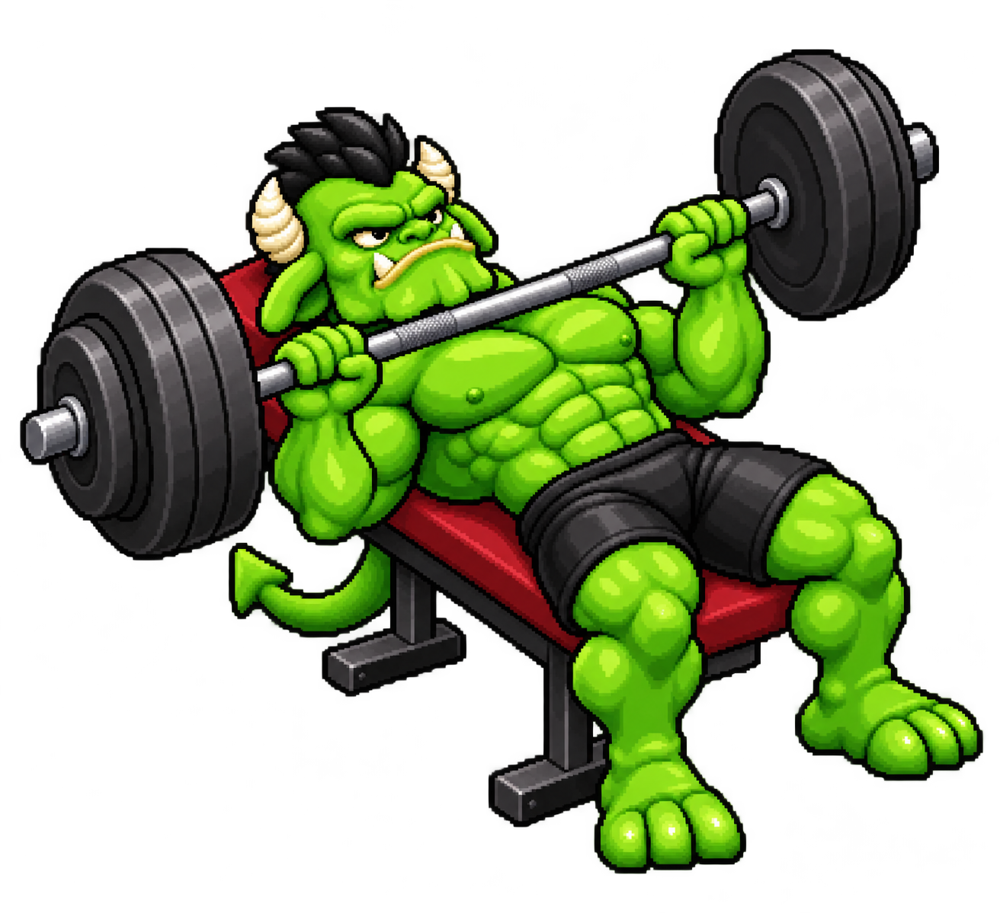

Nova proposta para o supino
Confira o rosto, as proporções do personagem e a pose. Toque em “Abrir imagem” para ampliar no celular.

O jogo não foi alterado. Esta imagem ainda não é a animação final.
Confira o rosto, as proporções do personagem e a pose. Toque em “Abrir imagem” para ampliar no celular.

O jogo não foi alterado. Esta imagem ainda não é a animação final.